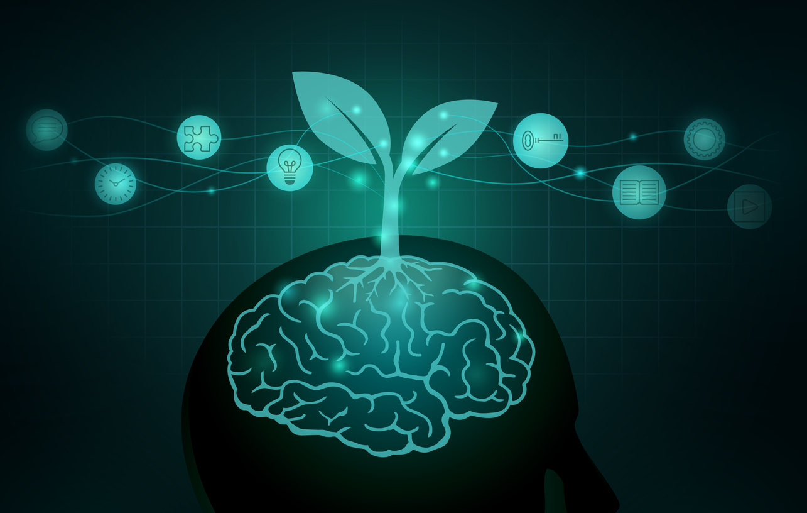

Neuroplasticity and Growth Mindset
The Importance of Neuroplasticity and Growth Mindset
Neuroplasticity
The Benefits of Understanding Neuroplasticity
Neuroplasticity can be seen as the human brain's ability to change and adapt throughout its lifetime. Contrary to common beliefs, the brain can form new neural connections, rewire existing connections, and reorganize regions of the brain at any age! By acquiring an understanding of neuroplasticity - the fact that the human brain is constantly changing and capable of learning things at any age - it encourages a growth mindset, making people more likely to engage in learning new skills and expanding their knowledge. Old dogs can learn new tricks!
The Ten Principles of Neuroplasticity
Although just having knowledge about neuroplasticity helps, knowing alone won't change your neural connections. By following these ten principles listed below, you and I should be able to get the most out of neuroplasticity.
- Use it or lose It: As your brain can change to learn new things, it can also forget them if the pathway isn't strengthened. Use whatever you're trying to learn!
- Use it and improve it: If you want to improve at something, use it. Train your mind and body to make that neural pathway stronger and later easier to use.
- Specificity: Specify the specific skill or ability you want to improve. You will see the best results by focusing on specific tasks.
- Repetition: Use, improve, repeat. You have to use it repeatedly to build strong, lasting neural pathways.
- Intensity: Research shows that the intensity of the practice you undertake aligns with the likelihood of achieving results and the changes being maintained over time.
- Time: Be patient. Rewiring your brain isn't going to be fast; unfortunately, we're not a high-powered computer connected to fiber internet. It will take consistent effort to achieve lasting results.
- Salience: Like many things in life, the neural pathway has to be meaningful to you. The significance of the task at hand can impact the amount of neuroplasticity that occurs.
- Age: Younger brains do have more neuroplasticity, but older brains are also able to achieve the benefits of neuroplasticity!
- Transference: Our brains have the ability to improve interconnected areas, allowing the transfer of skills and knowledge.
- Interference: At times, competing neural pathways can create hurdles in forging new connections. Minimizing distractions and focusing on desired changes can boost the brain's neuroplasticity.
With these principles in mind, we can establish some ways to increase neuroplasticity. Engage your brain with new meaningful experiences and active learning. Maintain a healthy lifestyle through mindfulness, exercise, and a good diet. Push your limits by challenging yourself with new knowledge and skills and keep it at a good intensity. These actions can help create new neural connections, promote brain growth, and foster a flexible and adaptable mind.
Here's a TED talk video on neuroplasticity that I found interesting.
Growth Mindset
Growth mindset is the belief that abilities, intelligence, and talents are not fixed; rather, these are traits that can be developed through hard work, good strategies, and input from others.
In contrast, a fixed mindset is when you believe that those traits are innate gifts. When you think in this way, you tend to worry about looking smart and put less effort into actually learning and getting the most out of the experience.
It's relevant to everyone as adopting the growth mindset allows individuals to see the challenges life throws at them as opportunities for growth. They can push further with ease as failure is no longer a term that defines them but a stepping stone to success. This changes how they view themselves, their skills, and knowledge to be malleable instead of fixed. It lets them grow as they embrace learning and gain resilience against setbacks.
In this exploration, as much as I hate to admit, I have been surprised to realize that I have had a fixed mindset. It has held me back in other phases of my life, and I am pleased to acquire this knowledge now. It has changed the way I will carry on the rest of this course and hopefully my life. It has motivated me to be more resilient and be more engaged with my own learning. I will adopt a growth mindset to achieve the transformative power of this mindset and neuroplasticity.
I will integrate growth mindset into my learning journey by changing my beliefs that my abilities are not fixed. I will reward myself not just for effort but for learning and progress, with an emphasis on processes that yield these things, such as seeking help, trying new strategies, and capitalizing on setbacks to move forward effectively. When faced with challenges, criticism, or performing poorly in comparison to others, instead of becoming insecure or defensive, I will think back to remaining in the growth mindset.
Here's short illustrated video on growth mindset that explains it much better!